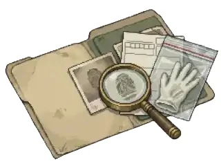
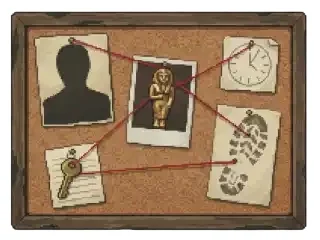
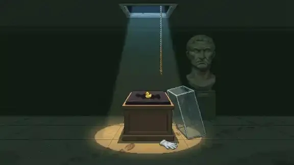
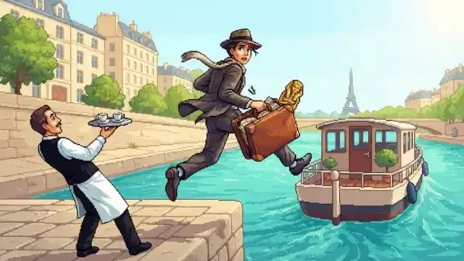
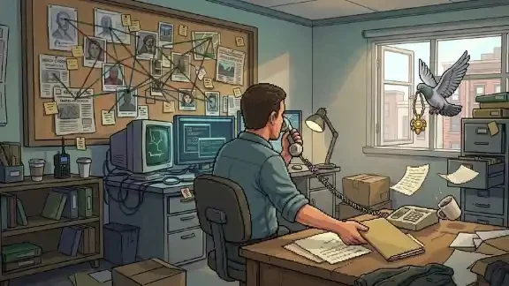

Your official job is recovering stolen artefacts. Your real reason for being here is another matter.
TRUST NO ONE. KEEP THE RECEIPTS.
ACTIVE INVESTIGATION
CLIENT STATEMENT / PERSONAL INQUIRY
A woman walks into your office. Her husband is missing. His last known employer: Mark Agency, specialists in recovering stolen artefacts.
So you take a job there. Solve their cases. Earn their trust. Get access to the rooms — and the people — that might know more than they’re saying.
Somewhere between the official assignments and your own investigation, things stop adding up.
02 / ACTUAL DETECTIVE WORK
A hunch is a start. Evidence is better.
Find the clues. Follow the connections. Make an accusation you can defend.
01THE EVIDENCE

Find what they missed.
Search crime scenes, collect evidence and put your findings through the lab. A suspicious mark is only useful if you can explain it.
SEARCH / ANALYSE / RECONSTRUCT
02THE TRAIL
Follow the wrong people.
Check alibis, question witnesses and chase leads across borders. The culprit is moving. Your travel budget is not infinite.
QUESTION / TRAVEL / PURSUE
03THE CASE

Make the case stick.
A name is not a case. Connect the suspect, motive, means and opportunity — then defend your conclusions in court.
CONNECT / ARREST / PROVE
03 / A TYPICAL DAY. UNFORTUNATELY.
From “something’s missing” to “there they go”.
International adventure. Deeply inconvenient suspects.

THE CRIME SCENE
A
Somebody took the priceless part.
The scene has a story. Your job is to find the bits the thief hoped you wouldn’t notice.

THE INTERNATIONAL COMPLICATION
B
The suspect has a head start.
New cities. New witnesses. Same very reasonable questions about that suspicious suitcase.
Promotional illustrations. A suspiciously accurate representation of the paperwork-to-chaos ratio.
04 / AFTER OFFICE HOURS
Agency business. Private business. Same detective.
Recover stolen artefacts for Mark Agency. Back in your home town, take private jobs, build up your own office and work the leads that don’t belong in an agency report.
OFFICIAL FILE International casesPERSONAL FILE Your unfinished business
AFTER HOURS / STILL YOUR PROBLEMEXHIBIT C

SOME LEADS COME TO YOU.OTHERS LEAVE A MESS.
YOUR APPLICATION HAS NOT BEEN REJECTED. YET.
THE DESK IS AVAILABLE
Good instincts? Questionable judgement? You’ll fit right in.